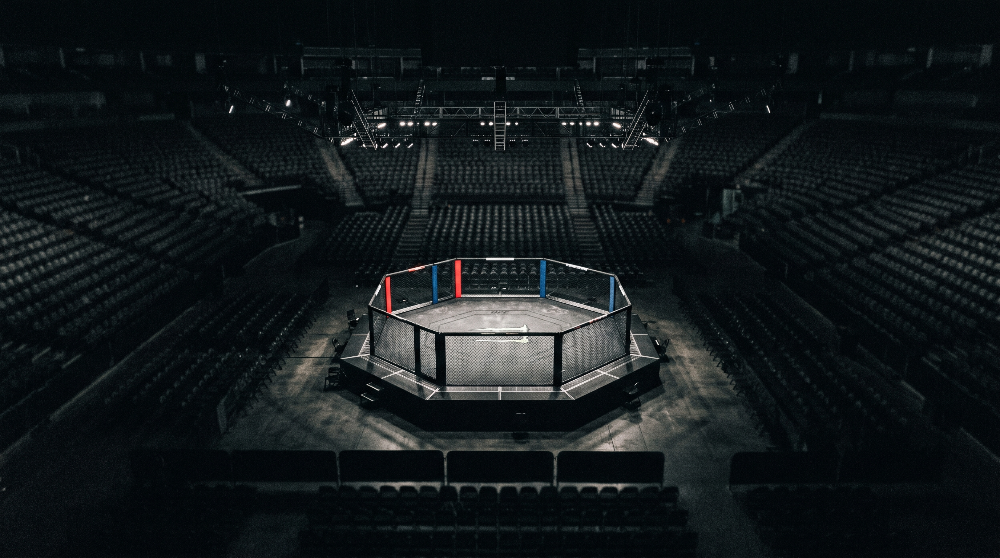
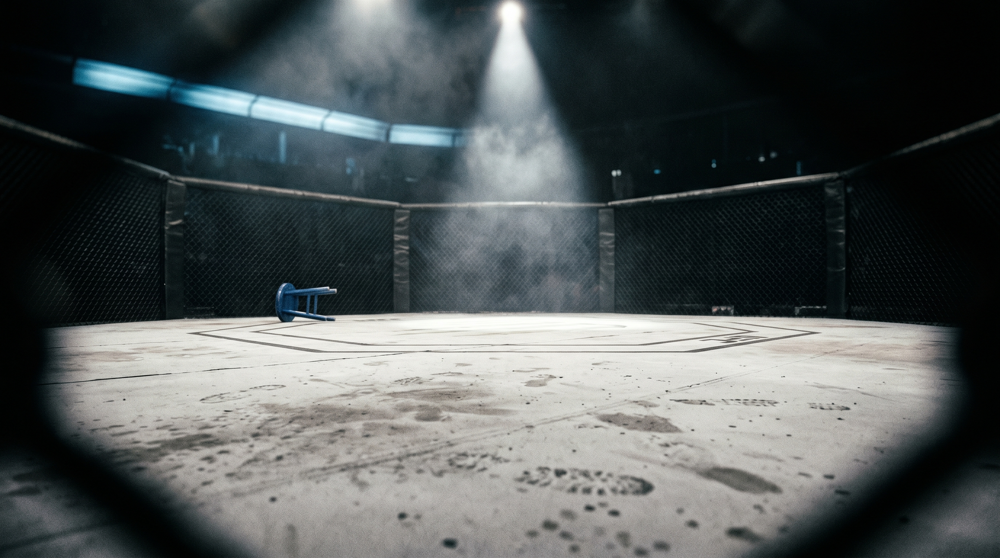
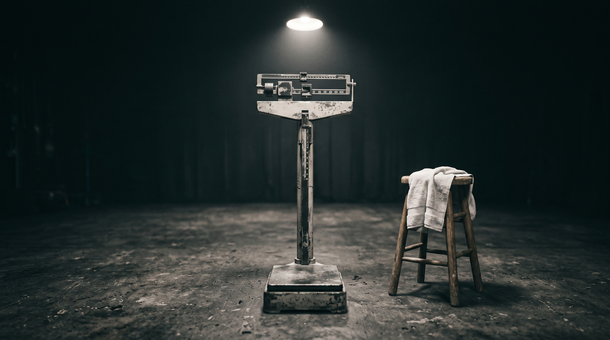
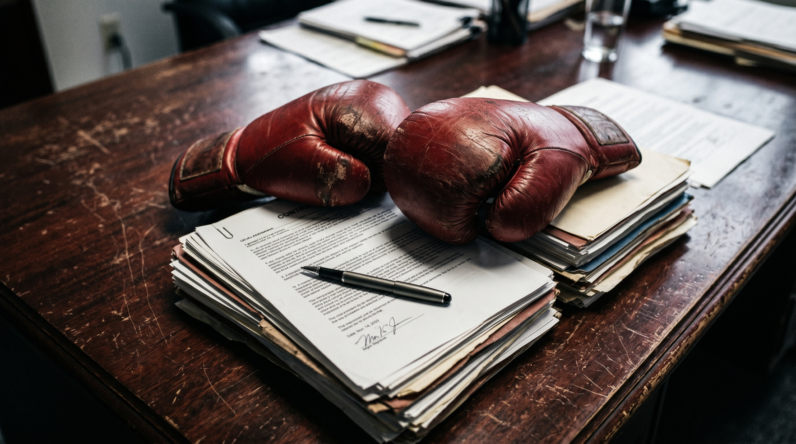
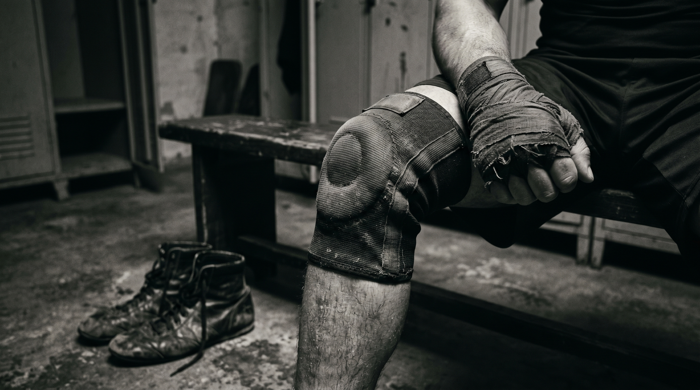
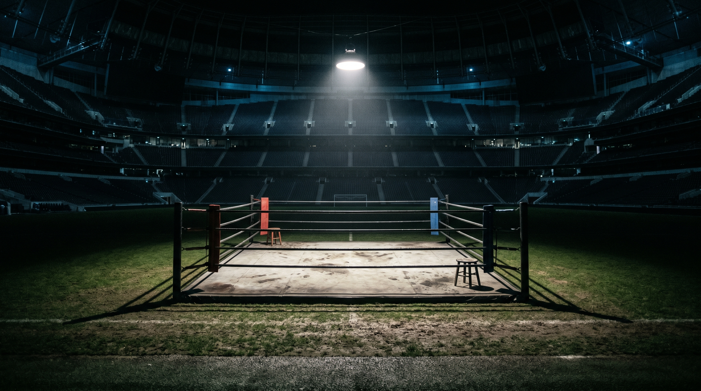

Happy Monday, everyone.
I've been covering this sport for a long time. Long enough to know that once in a while, something happens inside the cage or the ring that genuinely stops you mid-sentence. That makes you forget whatever you were about to write and just sit with the moment. Saturday night in Miami gave us one of those moments. And we're going to start right there.
Beyond UFC 327, this was one of the more consequential 48-hour stretches the sport has seen in a while. Tyson Fury returned on Netflix across the Atlantic. Conor Benn made his debut for Dana White's boxing operation — and promptly made Regis Prograis consider retirement. Gable Steveson officially signed his UFC contract. And the White House event is getting more real and more expensive by the week.
There's a lot here. Let's get into it.

About ninety seconds into the first round at UFC 327 on Saturday night, Carlos Ulberg's right knee buckled. You could hear the reaction from the crowd at Kaseya Center in Miami — that collective inhale you only get when people realize they may have just witnessed something serious. Jiří Procházka had been working that leg methodically. Landing kicks, targeting it, doing exactly what a smart fighter does against a bigger man. Ulberg winced. He stumbled. By every measure of competitive logic, the fight was over.
It wasn't.
What happened next — at 3:45 of Round 1, in front of a sold-out crowd that included the President of the United States — may be the most improbable title fight finish I've seen in years. Ulberg, operating on one functioning leg, found a counter left hook that landed as cleanly as anything you'll see this year. Procházka went down. The follow-up punches were almost unnecessary. The referee waved it off, and a 15-1 fighter from New Zealand, a man who had spent years in the middleweight division before moving up, a man who'd gone 10 straight without a loss just to get to this moment, was the new UFC light heavyweight champion.
I'll be honest — I didn't see the finish coming. Nobody did. Procházka himself didn't. "I felt sorry for him," the Czech fighter said after, with more grace than most fighters would manage in defeat. "This is one of the biggest lessons in my life." That line says everything about the version of Procházka we've watched evolve since his own title reign. He's become someone who respects the brutality of this game.
But this story belongs to Ulberg. He is 25 years old. He has 10 consecutive first-round stoppages. He is the light heavyweight champion of the world, and he won that title fighting through an injury that would have ended the night for most competitors. The knee has to be evaluated this week — a person familiar with the situation told me they're monitoring it closely — and his timeline going forward is uncertain. But the performance? What he did under those lights, in that building, against a former champion? That performance will be shown to fighters for the next decade. It's that kind of night.
My take: whoever the UFC matches him against next is walking into a nightmare. When you can finish a Procházka with one working leg, you're operating at a level above almost everyone in that weight class right now.

UFC Fight Night: Burns vs. Malott — April 18, Canada Life Centre, Winnipeg (Paramount+)
Gilbert Burns is 37 years old and still very much capable of ending nights. He's fought everyone at welterweight, and while a title shot is almost certainly not coming, he remains a credible gatekeeper — and a dangerous one. Malott is a Canadian prospect fighting in front of a home crowd, which is always worth tracking. My pick: Burns by decision. He's been here a hundred times. Malott hasn't. That experience gap tends to show in fights like this.
UFC Fight Night: Della Maddalena vs. Prates — May 2, RAC Arena, Perth (Paramount+)
This is the fight I'm most excited about in the next few weeks. Jack Della Maddalena lost his welterweight title to Islam Makhachev at UFC 322 back in November — a result that surprised a lot of people, including some in his own camp — and now he needs to show he belongs at the top of the division in a different era. Carlos Prates is 6-1 in the UFC, ranked fifth at 170, and he can absolutely finish fights. If JDM loses this one, the road back to a title shot gets very long very fast. Pick: Della Maddalena by stoppage, round three. He's fighting on home soil and he needs a statement win. Watch for it.
UFC 328: Chimaev vs. Strickland — May 9, Prudential Center, Newark (Paramount+)
I've been looking forward to this one since the moment it was announced. Khamzat Chimaev and Sean Strickland have been conducting a months-long social media war that has, at several points, required UFC management to step in. Dana White confirmed this week that the Prudential Center will have tighter security — not because of anything specific, but because the combination of Chimaev and Strickland in the same building generates a particular kind of energy that doesn't always stay contained. On the undercard: Joshua Van defends the flyweight title against Tatsuro Taira, and Jim Miller fights for the 46th time in the UFC, which is a number that doesn't look real when you type it. Pick: Chimaev by late stoppage. Strickland will make it ugly for a few rounds, but Khamzat's wrestling and pressure is just too much. Though I'll be watching those early rounds very carefully.

The UFC Freedom 250 cost estimate has gone from "unusual" to "staggering." The June 14 White House event — scheduled for the South Lawn, coinciding with Flag Day and, not coincidentally, President Trump's 80th birthday — is now estimated to cost $60 million to produce. Sixty million dollars. The main event is Ilia Topuria defending the lightweight title against Justin Gaethje, with Alex Pereira vs. Ciryl Gane for an interim heavyweight title as the co-main. Crypto.com is reportedly funding a $1 million cryptocurrency bonus for the top performance. There will be 3,000 to 4,000 people on the lawn, large screens at The Ellipse for up to 85,000 public viewers, and it will air on Paramount+ with select prelims on CBS. I don't know what to say about this other than: we are in genuinely uncharted territory for this sport. The line between combat sports and American political spectacle — already blurry for years — is now essentially invisible.
Meanwhile, Saturday night also marked the first official Zuffa Boxing event in London. Conor Benn's debut under Dana White's boxing banner cost — reportedly — $15 million in purse money for the card. Benn beat Regis Prograis by wide unanimous decision, 98-92 across the board. Prograis, a two-time world champion at 140 pounds, announced his retirement after the fight. This is a significant moment. After his split from Eddie Hearn and Matchroom in February, Benn immediately got offered a world title shot after the win. If that fight happens — and I think it will — Zuffa Boxing will have its first major pay-per-view moment by the end of the year.
The Paramount+/TKO seven-year, $7.7 billion deal remains the foundational story of the UFC's business in 2026. Everything else is being built around that structure. All 13 numbered events, all Fight Night cards, Paramount+. Select events on CBS. This is what post-ESPN UFC looks like, and so far, the production has been noticeably different — more mainstream sports presentation, fewer Dana White press conferences, more focus on narrative packaging. Whether that's a good thing depends on what you want from this sport.

Gable Steveson. The Olympic gold medalist signed his UFC contract this weekend, and his debut is set for UFC 329 in Las Vegas on July 11 — which is also the card being discussed for a possible Conor McGregor return. Steveson has been training at Jackson Wink under the guidance of Jon Jones, who has reportedly taken a genuine interest in developing him. He's 3-0 as a professional with three finishes. His opponent for the debut hasn't been announced yet. Look — I'll be honest about this — most Olympic wrestling prospects take years to develop into UFC contenders. Steveson is not most prospects. His athleticism is genuinely off the charts, and the Jones connection is real mentorship, not just a photo op. I'm curious to see what level of competition he gets thrown in against first. If the UFC is smart, they'll protect him early and let the hype build organically. If they're impatient, they'll push him too fast and risk the narrative.
Darren Till. The former title challenger who never quite got to where his talent suggested he should, Till signed with Bare Knuckle Fighting Championship this week — Conor McGregor's BKFC — and is set to debut on May 30 in Birmingham, England. He had three fights for Misfits Boxing, won all of them, captured their bridgerweight title, and now he's going to bare knuckle. There was talk of a UFC comeback. He chose this instead. I've spoken with people who know Till well over the years, and the consistent theme has always been that he's someone who chases the thing that excites him most, not the thing that makes the most career sense. Maybe that's why people have always rooted for him. May 30 will tell us something.
Jack Della Maddalena. I mentioned him in the previews section, but he deserves his own entry here. JDM went from a fighter whose whole run felt like a momentum story to a man who was briefly the welterweight champion of the world. He lost that belt to Makhachev in a fight where the narrative got complicated — the weight class crossover angle, the debate over whether he was truly ready for that level. Now he comes back in Perth, in front of his own fans, against a genuine finisher. This is one of those fights where a career either reasserts itself or takes a very different road. I'll be watching closely.

Tyson Fury won Saturday. Comfortably. The scorecard — 120-108, 120-108, 119-109 — wasn't dramatic, but it wasn't supposed to be. Arslanbek Makhmudov is dangerous in the early rounds, and Fury, coming off a 16-month absence and two losses to Usyk, needed a night where he could find his rhythm without getting hurt. He did that. He looked sharper in rounds five through twelve than in rounds one through four. He looked like Tyson Fury again.
And then, immediately after, he stood in the ring at Tottenham Hotspur Stadium and called out Anthony Joshua. The crowd — British, partisan, hungry — went wild. And Joshua, who was at the event, declined to enter the ring. His response, delivered apparently from somewhere in the building: "Tyson, you're a clout chaser."
Here's my honest read on this. Joshua is playing it smart by playing it cold. He knows that if he walks into that ring in the emotional heat of the moment, he becomes a prop in Fury's narrative. He doesn't want that. He wants to be the one who sets the terms. But — and this matters — the longer he waits, the more Fury controls the story. This is Fury's greatest skill. He has always been better at building anticipation than anyone in British boxing. He knows how to make opponents feel like they're playing defense just by standing in front of a microphone.
The fight should happen. Everyone knows it should happen. The question is whether both men's teams can get in a room and agree on numbers without this becoming a negotiation that runs past the point where either fighter is who we need them to be. I've been hearing for years that it's "close." My take: this one is real. It's closer than it's been. But "close" in boxing, as anyone who's been covering this long enough knows, still has a way of falling apart. I'm not counting it until the contract is signed.
The Fight Docket | Issue published Monday, April 14, 2026 | Unsubscribe